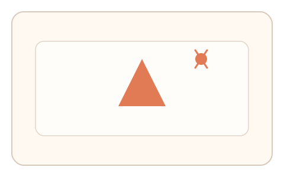
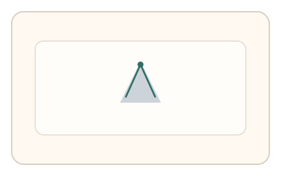
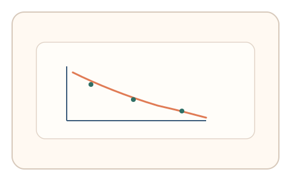

#30
视觉思考范式：时域/适应/残影
已扩展
残影描摹窗口
短时呈现图形后立即空白，让用户在残影衰减期描摹轮廓以验证手眼同步与视觉暂留。
概念原文
先呈现高对比图形 200–400ms 后立即空白，让用户在残影尚未消失时快速描摹轮廓。系统记录起笔延迟、描摹速度与残影衰减曲线。
验证的是“视觉暂留衰减+手眼同步”，不是识别正确与否。
研究背景
视觉暂留会在刺激消失后短时间内保留残影，且残影强度随时间衰减。人类在残影窗口内描摹时呈现特定的起笔延迟与速度变化，可用于行为判别。
核心机制
- 短时呈现高对比图形后切换为空白。
- 用户在残影消失前快速描摹轮廓。
- 记录起笔延迟、描摹速度与停顿。
- 分析与残影衰减窗口的一致性。
用户流程
- 步骤 1：用户看到短暂闪现的图形。
- 步骤 2：画面空白后用户立即描摹。
- 步骤 3：系统评估描摹时序与轨迹。
判定信号
起笔延迟与残影窗口匹配度
人类通常在残影衰减前启动描摹。
描摹速度随时间的变化
残影减弱会导致描摹速度与精度变化。
判定逻辑
结合起笔延迟、描摹速度曲线与轨迹连贯性，要求匹配残影衰减窗口；过度恒定或无延迟判异常。
对抗面
- 脚本直接存储图形并在空白期描摹
- 重放真实用户的描摹轨迹
防御与缓解
- 随机化图形与呈现时长，避免模板化复现
- 加入轻微噪声与位置抖动增加记忆难度
- 叠加微时序与压力分布等多信号判定
可达性与风险
提供更长残影窗口或替代任务，避免对视觉迟缓用户造成负担。
- 短时刺激可能导致紧张或疲劳
- 设备刷新率影响残影时序
可视化状态

状态 1：短时呈现
高对比图形短暂闪现。

状态 2：残影描摹
空白背景中快速描摹轮廓。

状态 3：时序判定
分析起笔延迟与衰减曲线。
参考资料
Iconic memory
说明视觉暂留与残影窗口。
Afterimage
说明残影现象与衰减特性。